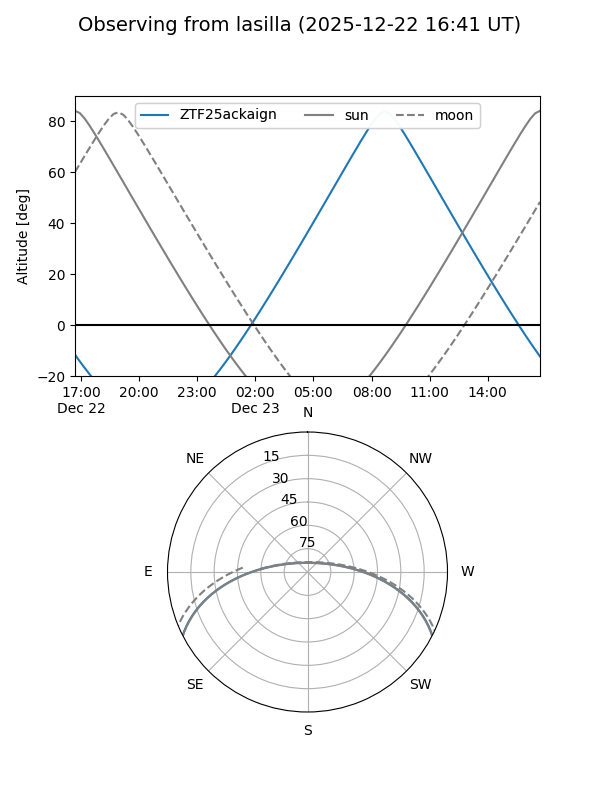
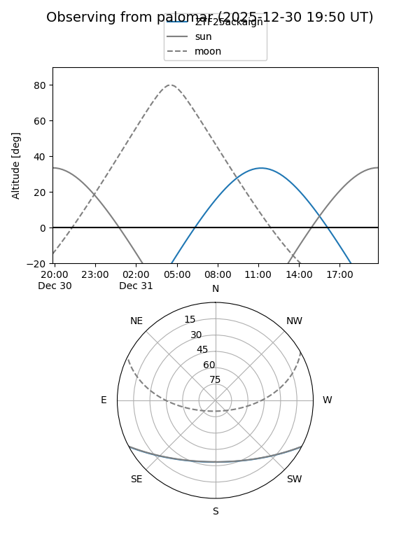

ZTF25ackaign
Target ZTF25ackaign at 2025-12-22 21:16
Aliases and brokers:
FINK: fink-portal.org/ZTF25ackaign
Lasair: lasair-ztf.lsst.ac.uk/objects/ZTF25ackaign
ALeRCE: alerce.online/object/ZTF25ackaign
alt names
ZTF25ackaign (ztf,fink_ztf)
Coordinates:
equatorial (ra, dec) = 151.3855,-23.13187
equatorial (HMS+DMS) = 10:05:32.51,-23:07:54.72
galactic (l, b) = (260.3961,+25.72712)
Flags:
Photometry:
last ztfg=19.05, ztfr=18.56
1 ztfg, 1 ztfr detections
Lightcurve

Visibility


Additional plots